How To Use This Kit
- Titles come in three lengths – about 60, 120 and 200 characters – brand first. Use the longest your marketplace allows; titles carry no ® or promotional words.
- Controls are never optional. Every heater listing names its Affinity Smart-Heat® Controls under “Required, sold separately”. Wi-Fi and app features need compatible Affinity Smart-Heat® Controls, sold separately.
- Installation by a licensed electrician or gas fitter to local code, on every listing.
- No prices. Price lists and SKU confirmations come from Sales operations.
- Main images are on pure white (#FFFFFF), 2000 × 2000 px, the product filling about 85% of the frame. Secondary images come from the Bromic image library by id.
- Search terms are directional suggestions, never claims.
- Import file:
listings.csv(one row per variant). Full data:listings.json.
Tungsten Smart-Heat® Electric Series II
Select and Coastal: available now (launched October 2026). Classic: from January 2027. · Series level – SKUs to confirm
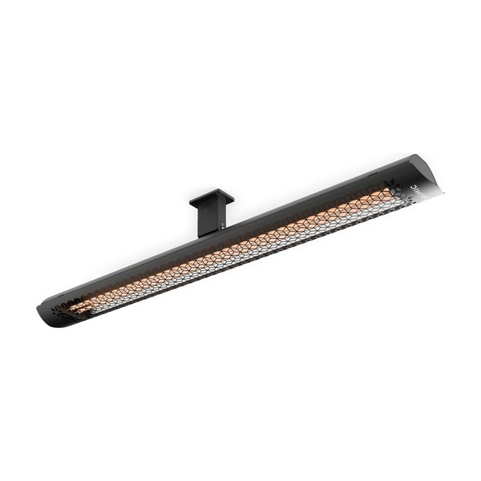
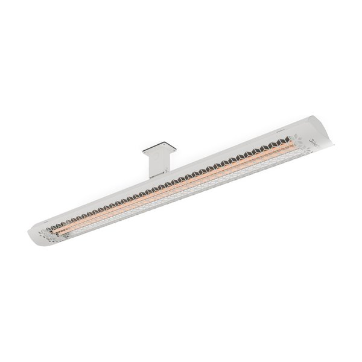
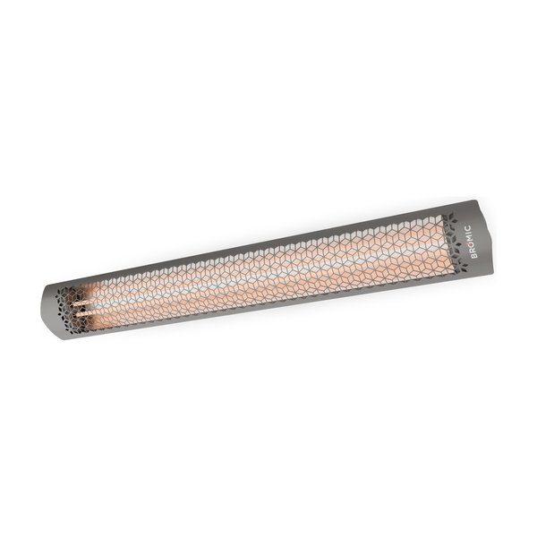
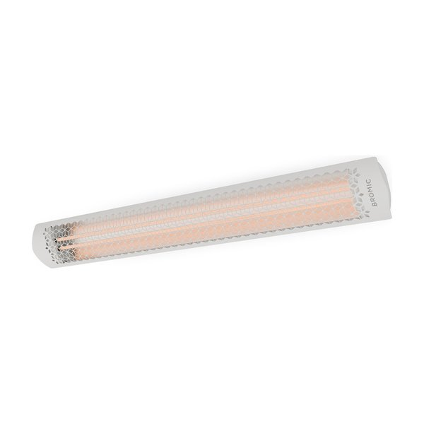
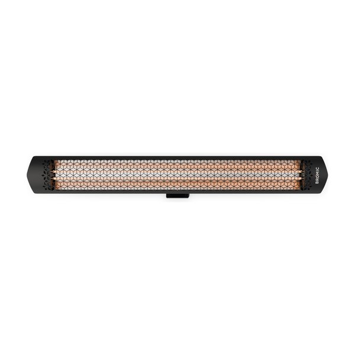
Titles
| Short | Bromic Tungsten Smart-Heat Electric Series II Patio Heater | 58 / 60 |
|---|---|---|
| Medium | Bromic Tungsten Smart-Heat Electric Series II Infrared Patio Heater, 2 to 6 kW, Ceiling, Wall, Post or Recessed | 111 / 120 |
| Long | Bromic Tungsten Smart-Heat Electric Series II Outdoor Infrared Patio Heater, 2, 3, 4 or 6 kW, 208, 240 or 277 V, IPX5, Black, White or Graphite, Ceiling, Wall, Post or Recessed Mount | 182 / 200 |
Feature Bullets
- Warmth Dialed To The Evening – dual elements on the 4 and 6 kW models deliver up to 6 kW of directional infrared heat, and an Affinity Smart-Heat® Dimmer turns it up on a cold night and down on a mild one. 205
- Mounts Wherever The Evening Happens – flat or pitched ceilings (3/12 to 12/12 with the adaptor), walls, extended wall brackets with 14 or 18 in reach, a single post, or flush in the ceiling with the low-clearance recess kit. 224
- Flush In A 7.5 In Ceiling – the fan-ventilated low-clearance recess kit for Select and Coastal sets the heater flush in a 7.5 in cavity, with the recess box supplied, so there is nothing to build on site. 204
- Slimmer And Lighter – about 14% narrower and about a third lighter than Series I, on a single post with no visible junction box, so the heater seems to float under the ceiling. 176
- Finished For Every Setting – all black, all white or all graphite, IPX5 rated, with a Diamond Pattern front; Coastal adds a corrosion-resistant coating over 316 marine-grade stainless for homes by the water. 207
Description 224 words
Tungsten Smart-Heat® Electric Series II brings precise directional warmth to the outdoor rooms you live in most, from a pergola dining table to a covered porch with a view. Medium wave infrared warms people and surfaces directly, reaching full warmth in about 30 seconds and holding up in a light breeze.
Series II is about 14% narrower and a third lighter than the first Tungsten, on a single post with no visible junction box. Choose Tungsten Select in black, white or graphite, with the Diamond Pattern front as standard and oval and triangle fronts sold separately, in 2, 3, 4 and 6 kW on 208, 240 or 277 V. Tungsten Coastal, in black or white at 4 and 6 kW, adds a high-temperature, corrosion-resistant coating over 316 marine-grade stainless steel for coastal homes and venues. Tungsten Classic follows from January 2027.
Mount it on a flat or pitched ceiling, on a wall or an extended wall bracket, on a single post, or recess it flush in a 7.5 in ceiling cavity with the fan-ventilated low-clearance recess kit. Every Tungsten heater is paired with Affinity Smart-Heat® Controls: the Dimmer as standard, so the warmth follows the evening, with zones, schedules and timers in the Bromic app. Wi-Fi and app features need compatible Affinity Smart-Heat® Controls, sold separately. Installation by a licensed electrician to local code.
Specifications
| Brand | Bromic Heating |
|---|---|
| Collection | Tungsten Smart-Heat® Electric Series II (Select, Coastal; Classic from January 2027) |
| Heat type | Medium wave infrared, electric |
| Output | Select and Classic: 2, 3, 4, 6 kW; Coastal: 4, 6 kW |
| Elements | Dual elements on 4 and 6 kW |
| Supply voltage | Select: 208, 240, 277 V (2 kW is 240 V only); Coastal: 208, 240 V |
| Heat area | About 64 to 144 sq ft, depending on model and size |
| Warm-up | About 30 seconds |
| Finish | Select: black, white, graphite (graphite on 4 and 6 kW); Coastal: black, white; Classic: black |
| Front | Diamond Pattern (Select standard, Coastal); oval and triangle for Select, sold separately; Classic: wireframe |
| Material (Coastal) | 316 marine-grade stainless steel with a high-temperature, corrosion-resistant coating |
| Water rating | IPX5 |
| Width | 7.2 in (183 mm) |
| Length | About 45 in (2 and 4 kW) or 56.5 in (3 and 6 kW) |
| Weight | 13 to 15 lb, by model |
| Mounting | Ceiling, wall, single post, pitched ceiling (with adaptor), recessed (with kit) |
| Recessing | Low-clearance recess kit, 7.5 in minimum cavity, fan-ventilated, recess box supplied (Select and Coastal) |
| Use | Outdoor and covered outdoor areas; Coastal is not for installation on boats |
| Warranty | 3 years |
Variants
| Name | SKU | Outputs | Supply | Finishes | Front | Status |
|---|---|---|---|---|---|---|
| Tungsten Select | To confirm | 2, 3, 4, 6 kW | 208, 240, 277 V (2 kW is 240 V only) | Black, white, graphite (graphite on 4 and 6 kW) | Diamond Pattern standard; oval and triangle sold separately | Available now |
| Tungsten Coastal | To confirm | 4, 6 kW | 208, 240 V | Black, white | Diamond Pattern | Available now |
| Tungsten Classic | To confirm | 2, 3, 4, 6 kW | As Series I | Black | Wireframe | From January 2027 |
In The Box
- Tungsten Smart-Heat® Electric Series II heater
- Single-post mount
Required, Sold Separately
- Affinity Smart-Heat® Dimmer Controller (recommended) or On/Off Controller – required to run the heater
- Manual wall switch
- Wi-Fi and app features need compatible Affinity Smart-Heat® Controls, sold separately
- Installation by a licensed electrician to local code
Optional Accessories
- Low-Clearance Recess Kit (Select and Coastal; marine-grade kit on Coastal)
- Pitched-Ceiling Adaptor, 3/12 to 12/12
- Wall-Mounting Bracket, 14 in or 18 in reach
- Mounting Bracket with 15°, 30° and 45° set positions
- Oval and triangle fronts (Select)
Search Terms
outdoor electric heater; infrared patio heater; recessed patio heater; ceiling mounted patio heater; wall mounted outdoor heater; pergola heater; covered porch heater; dimmable outdoor heater; 6 kW outdoor heater; 277 V patio heater; coastal outdoor heater; low clearance recessed heater
Image Plan
 LifestyleTimber pergola lounge at dusk with Tungsten Select overhead (Lookbook 2026)
LifestyleTimber pergola lounge at dusk with Tungsten Select overhead (Lookbook 2026)l-006-028 DetailDiamond Pattern front, close; or the endcap render with the Bromic logo
DetailDiamond Pattern front, close; or the endcap render with the Bromic logot2-select-black ControlsAffinity Dimmer with the Bromic app on a phone; caption: controls sold separately
ControlsAffinity Dimmer with the Bromic app on a phone; caption: controls sold separatelyw-affinity-dimmer-1ch-2 MountingSingle post, no visible junction box; add the pitched-ceiling adaptor and recess kit as line drawings
MountingSingle post, no visible junction box; add the pitched-ceiling adaptor and recess kit as line drawingst2-single-post-blackt2-low-clearance-recess Coastal lifestyleWhite Tungsten Coastal on a rendered wall above an ocean view (Lookbook 2026)
Coastal lifestyleWhite Tungsten Coastal on a rendered wall above an ocean view (Lookbook 2026)l-005-020Enhanced Content
Plus the shared modules: comparison of series and which heater for your space.
Open items for this listing (10)
- [[VERIFY: Series II SKU list by output, voltage, finish and front – Product team]]
- [[VERIFY: data/product-facts.json and data/retail/retail.json still mark Select and Coastal as not yet launched; owner confirmed launch (22 Nov 2026) – update the data files – Product team]]
- [[VERIFY: Series II mounting heights, listings/certification, rated current – Product team]]
- [[VERIFY: 3-year warranty (owner, 18 Nov 2026), element cover and Coastal terms, and publication on bromic.com – Product team]]
- [[VERIFY: 45° tilt on 4 and 6 kW against the manual's 30° – Product team]]
- [[VERIFY: which outputs share each body length (deck slides '3-6kW' and '2-4kW') – Product team]]
- [[VERIFY: Coastal body in 316 stainless (Lookbook only) and the coating name – Product team]]
- [[VERIFY: what ships in the box (post, brackets, hardware) – Product team]]
- [[VERIFY: Series II coverage per output (Lookbook gives 64–144 sq ft for the range) – Product team]]
- [[VERIFY: number of recess-kit fans and any fire-rated lining – Product team]]
Sources: data/product-facts.json: tungsten-select, tungsten-coastal, tungsten-electric, principles.wavelength, principles.wavelength-by-product; data/retail/retail.json: tungsten-series-ii; data/product-marketing/tungsten-electric-series-ii.json: tiers, upgrades, pillars, slimness, dimensions, accessories, warranty_note, tilt_verify, spec_verify; data/portfolio.json: tungsten-series-ii
Platinum Smart-Heat® Electric
Current · Model-level SKUs
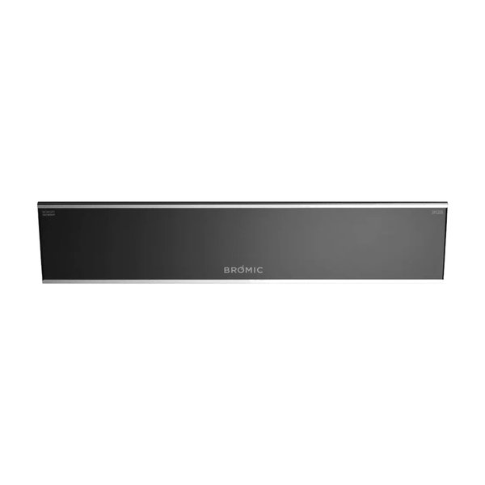
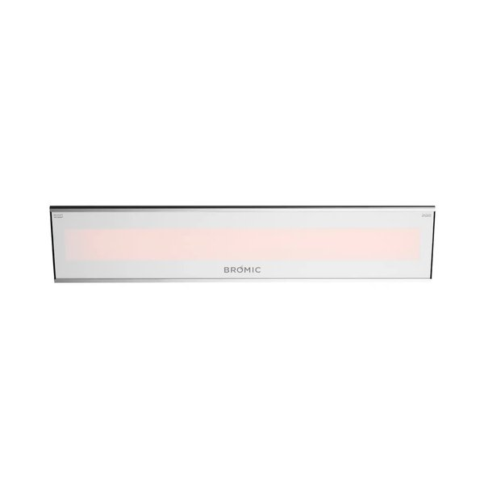
Titles
| Short | Bromic Platinum Smart-Heat Electric Infrared Patio Heater | 57 / 60 |
|---|---|---|
| Medium | Bromic Platinum Smart-Heat Electric Outdoor Infrared Heater, Glass-Ceramic Face, 2300, 3400 or 4500 W, Black or White | 117 / 120 |
| Long | Bromic Platinum Smart-Heat Electric Outdoor Infrared Patio Heater, Tinted Glass-Ceramic Face, 2.1 In Slim, 2300, 3400 or 4500 W, 208 or 240 V, Black or White, Wall, Ceiling, Pole or Recessed | 190 / 200 |
Feature Bullets
- Heat You Can Feel, Not See – a tinted glass-ceramic face spreads warmth evenly and keeps visible light to a minimum, so the evening keeps the light you chose for it. 165
- Slim By Design – just 2.1 in deep, in a 304 stainless steel body behind glass, Platinum reads as part of the architecture in black or white. 140
- Flush In A 7.1 In Ceiling – the low-clearance recess kit, sold separately, sets Platinum flush in a 7.1 in cavity with the recess box supplied and a cooling fan built in. 170
- Three Sizes – 2300, 3400 and 4500 W warm up to 65, 108 and 143 sq ft each on 208 V or 220–240 V; the 4500 W model has two elements for staged heat. 147
- Warmth Dialed To The Evening – pair it with the Affinity Smart-Heat® Dimmer, sold separately, to set the warmth in 1% steps by zone and on a schedule in the Bromic app. 168
Description 212 words
Platinum Smart-Heat® Electric is the heater for the most considered outdoor rooms. Behind a tinted glass-ceramic face, medium wave infrared warms people and surfaces evenly, keeps visible light to a minimum and reaches full warmth in about 30 seconds. The body is just 2.1 in deep, in 304 stainless steel, finished in black or white to sit quietly against a timber, plaster or painted ceiling.
Choose 2300, 3400 or 4500 W for heat areas of up to 65, 108 and 143 sq ft, on 208 V or 220–240 V. Mount it on a wall or ceiling, on the 8 in stainless pole included in the box, on a longer pole, or recess it: the standard recess kit, or the low-clearance kit that sets the heater flush in a ceiling cavity as shallow as 7.1 in, with the recess box supplied and a cooling fan built in.
Every Platinum heater is paired with Affinity Smart-Heat® Controls, sold separately: the Dimmer sets the warmth in 1% steps, with zones, schedules and timers in the Bromic app, and Alexa, Google Assistant, Control4, Crestron or Lutron where compatible. Wi-Fi and app features need compatible Affinity Smart-Heat® Controls, sold separately. Installation by a licensed electrician to local code. Intertek ETL and cETL listed, with a 3-year warranty.
Specifications
| Brand | Bromic Heating |
|---|---|
| Collection | Platinum Smart-Heat® Electric |
| Heat type | Medium wave infrared, electric |
| Output | 2300, 3400 or 4500 W |
| Heat area | 65, 108 or 143 sq ft |
| Supply voltage | 208 V or 220–240 V |
| Current draw | 2300 W: 9.6 A (240 V), 11.1 A (208 V); 3400 W: 14.2 A, 16.3 A; 4500 W: 18.8 A, 21.6 A |
| Elements | 4500 W: two elements (1.5 kW and 3 kW) |
| Warm-up | About 30 seconds |
| Face | Tinted glass-ceramic |
| Body | 304 stainless steel |
| Finish | Black or white |
| Depth | 2.1 in (54 mm) |
| Length | 2300 W: 33.1 in (840 mm); 3400 W: 50.2 in (1275 mm); 4500 W: 53.2 in (1351 mm) |
| Weight | 17, 22 or 33 lb |
| Minimum mounting height | Wall 72 in; ceiling 96 in |
| Mounting | Wall, ceiling, pole or recessed |
| Certification | Intertek ETL / cETL 5001799 |
| Warranty | 3 years |
Variants
| Name | SKU | Coverage | Weight |
|---|---|---|---|
| 2300 W, black | BH0320003 | 65 sq ft | 17 lb |
| 2300 W, white | BH0320007 | 65 sq ft | 17 lb |
| 3400 W, black | BH0320005 | 108 sq ft | 22 lb |
| 3400 W, white | BH0320008 | 108 sq ft | 22 lb |
| 4500 W, black | BH3622000 | 143 sq ft | 33 lb |
| 4500 W, white | BH3622001 | 143 sq ft | 33 lb |
In The Box
- Platinum Smart-Heat® Electric heater
- 8 in stainless steel pole
- Wall bracket
Required, Sold Separately
- Affinity Smart-Heat® Dimmer Controller (recommended) or On/Off Controller – required to run the heater
- Manual wall switch
- Wi-Fi and app features need compatible Affinity Smart-Heat® Controls, sold separately
- Installation by a licensed electrician to local code
Optional Accessories
- Standard recess kit
- Low-clearance recess kit (7.1 in cavity, recess box supplied, cooling fan)
- 2 ft and 4 ft poles
- Affinity expansion board for building management systems
Search Terms
glass patio heater; recessed outdoor heater; flush mount patio heater; infrared heater for porch; low glare outdoor heater; slim electric patio heater; ceiling patio heater; white patio heater; black patio heater; dimmable infrared heater; outdoor room heater
Image Plan
 LifestylePlatinum recessed in a timber-batten ceiling over an ocean-view dining table
LifestylePlatinum recessed in a timber-batten ceiling over an ocean-view dining tablew-bromic-platinum-electric DetailGlass-ceramic face with the Bromic logo, close
DetailGlass-ceramic face with the Bromic logo, closew-black-platinum-electric-close-upControlsAffinity Dimmer with the Bromic app; caption: controls sold separatelyw-affinity-dimmer-1ch-2 MountingLow-clearance recess kit: 7.1 in cavity, recess box supplied (kit sold separately)
MountingLow-clearance recess kit: 7.1 in cavity, recess box supplied (kit sold separately)w-lcrecesskitEnhanced Content
Plus the shared modules: comparison of series and which heater for your space.
Open items for this listing (6)
- [[VERIFY: SKUs against the 2026 cut sheets (read from bromic.com) – Product team]]
- [[VERIFY: IP rating of the standard heater (IPX4 vs IP54 across manuals and cut sheet) – Product team]]
- [[VERIFY: wall bracket angle (30° vs 28°) – Product team]]
- [[VERIFY: a current standard cut sheet (bromic.com links the Marine sheet) – Product team]]
- [[VERIFY: low-clearance kit UL listing number – Product team]]
- [[VERIFY: lengths by output from the tiers notes, in inches – Product team]]
Sources: data/product-facts.json: platinum-electric (site.models), principles.wavelength-by-product, principles.codes-electric; data/retail/retail.json: platinum-electric, ordering; data/product-marketing/platinum-electric.json: tiers, upgrades, pillars, spec_verify; data/portfolio.json: platinum-electric
Platinum Smart-Heat® Electric Marine
Current · Series level – SKUs to confirm
see open items
Titles
| Short | Bromic Platinum Smart-Heat Electric Marine Patio Heater | 55 / 60 |
|---|---|---|
| Medium | Bromic Platinum Smart-Heat Electric Marine Outdoor Infrared Heater, 316 Stainless Steel, IPX5, 2300 to 4500 W | 109 / 120 |
| Long | Bromic Platinum Smart-Heat Electric Marine Outdoor Infrared Patio Heater, AISI 316 Marine-Grade Stainless Steel, IPX5, Glass-Ceramic Face, 2300, 3400 or 4500 W, Black or White, for Coastal Homes | 194 / 200 |
Feature Bullets
- Built For Life By The Water – an AISI 316 marine-grade stainless steel body behind a tinted glass-ceramic face, rated IPX5, for coastal homes and venues. 153
- Heat You Can Feel, Not See – the glass-ceramic face spreads warmth evenly and keeps visible light to a minimum, so a sunset terrace keeps its light. 148
- Three Sizes – 2300, 3400 and 4500 W warm up to 65, 108 and 143 sq ft each, on 208 V or 220–240 V. 97
- Recessed Or Mounted – marine versions of the standard and low-clearance recess kits, in 316 stainless, are sold separately, or mount it on a wall or ceiling. 157
- Warmth Dialed To The Evening – pair it with the Affinity Smart-Heat® Dimmer or On/Off Controller, sold separately, for zones and schedules in the Bromic app. 157
Description 190 words
Platinum Smart-Heat® Electric Marine brings Platinum's tinted glass-ceramic face to the places salt air reaches. The body is AISI 316 marine-grade stainless steel, rated IPX5, so a seafront terrace, a harbour-side restaurant or a beach house porch keeps its warmth season after season.
Medium wave infrared warms people and surfaces evenly and reaches full warmth in about 30 seconds, while the glass face keeps visible light to a minimum. Choose 2300, 3400 or 4500 W for heat areas of up to 65, 108 and 143 sq ft, on 208 V or 220–240 V, in black or white. Mount it on a wall or ceiling, or recess it with the marine versions of the standard and low-clearance recess kits in 316 stainless steel, sold separately.
Every Platinum heater is paired with Affinity Smart-Heat® Controls, sold separately: the Dimmer or On/Off Controller and a manual wall switch, with zones, schedules and timers in the Bromic app. Wi-Fi and app features need compatible Affinity Smart-Heat® Controls, sold separately. Platinum Electric Marine carries Lloyd's Register approval for marine applications and a 5-year warranty on land-based installations. Installation by a licensed electrician to local code.
Specifications
| Brand | Bromic Heating |
|---|---|
| Collection | Platinum Smart-Heat® Electric Marine |
| Heat type | Medium wave infrared, electric |
| Output | 2300, 3400 or 4500 W |
| Heat area | 65, 108 or 143 sq ft |
| Supply voltage | 208 V or 220–240 V |
| Body | AISI 316 marine-grade stainless steel |
| Face | Tinted glass-ceramic |
| Finish | Black or white |
| Water rating | IPX5 |
| Weight | 17, 22 or 33 lb |
| Minimum mounting height | Wall 72 in; ceiling 96 in |
| Approval | Lloyd's Register approval for marine applications |
| Warranty | 5 years, land-based installations |
Variants
| Name | SKU | Coverage | Weight |
|---|---|---|---|
| 2300 W | To confirm | 65 sq ft | 17 lb |
| 3400 W | To confirm | 108 sq ft | 22 lb |
| 4500 W | To confirm | 143 sq ft | 33 lb |
In The Box
- Platinum Smart-Heat® Electric Marine heater
Required, Sold Separately
- Affinity Smart-Heat® Dimmer Controller (recommended) or On/Off Controller – required to run the heater
- Manual wall switch
- Wi-Fi and app features need compatible Affinity Smart-Heat® Controls, sold separately
- Installation by a licensed electrician to local code
Optional Accessories
- Marine standard recess kit (316 stainless)
- Marine low-clearance recess kit (316 stainless)
Search Terms
marine grade patio heater; 316 stainless outdoor heater; coastal patio heater; beach house heater; salt air outdoor heater; waterfront terrace heater; IPX5 outdoor heater; recessed marine heater
Image Plan
 LifestyleWhite Platinum Electric Marine over a coastal deck (land-based)
LifestyleWhite Platinum Electric Marine over a coastal deck (land-based)w-platinum-electric-marine-in-whiteDetailGlass-ceramic face, close (shared with Platinum Electric; confirm it shows the Marine body)w-black-platinum-electric-close-upControlsAffinity Dimmer with the app; caption: controls sold separatelyw-affinity-dimmer-1ch-2 MountingRecess kit vents (marine kit image to request)
MountingRecess kit vents (marine kit image to request)w-platinumelectriclcrecesskitventsEnhanced Content
Plus the shared modules: comparison of series and which heater for your space.
Open items for this listing (6)
- [[VERIFY: Marine SKU list by output and finish – Product team]]
- [[VERIFY: on-vessel use – bromic.com shows yachts and gives a 3-year on-vessel warranty, the manuals say the marine heater shall NOT be installed on marine craft; listing copy is land-based only until resolved – Product team]]
- [[VERIFY: IP rating (IPX5 in product-facts; the 4500 W manual says IP55) – Product team]]
- [[VERIFY: certification (ETL/cETL listing for Marine) and box contents – Product team]]
- [[VERIFY: a Marine white-ground product image – Marketing]]
- [[VERIFY: FAQ says 314 stainless; the page says 316 – Product team]]
Sources: data/product-facts.json: platinum-electric-marine; data/retail/retail.json: platinum-electric; data/product-marketing/platinum-electric.json: tiers (marine, lcrk), pillars
Eclipse Smart-Heat® Electric
Current · Model-level SKUs
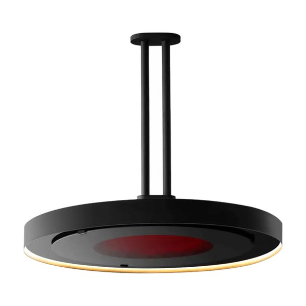
Titles
| Short | Bromic Eclipse Smart-Heat Electric Pendant Patio Heater | 55 / 60 |
|---|---|---|
| Medium | Bromic Eclipse Smart-Heat Electric Pendant Patio Heater with Dimmable LED Light, 2900 W, 121 Sq Ft, Matte Black | 111 / 120 |
| Long | Bromic Eclipse Smart-Heat Electric Outdoor Pendant Patio Heater with Dimmable 3000K LED Ring, 2900 W, 3 Heat Settings, 121 Sq Ft, 208 or 240 V, IP54, Matte Black, 24 In Twin Pole | 178 / 200 |
Feature Bullets
- Warmth And Light In One – radiant heat and a warm, dimmable 3000K LED ring in one fixture keep the table warm and softly lit from sunset to the last glass. 155
- Three Settings For Every Evening – two elements give 33%, 66% and 100% of 2,900 W, from a mild spring evening to a cold night, over up to 121 sq ft a heater. 157
- Designed To Be Seen – a 27.6 in matte black disc with a radial ceramic screen and a halo of light, made to hang over a dining table or lounge. 142
- The Right Height Under Any Ceiling – a 24 in twin pole is included; 8, 24 and 48 in straight poles, a curved pole and a wall-mount pole are sold separately. 156
- Set The Scene From Your Phone – with the Affinity Smart-Heat® Eclipse Controller, sold separately, the Bromic app dims heat and light and runs schedules and zones. 163
Description 207 words
Eclipse Smart-Heat® Electric is the heater you choose to show. A 27.6 in matte black disc with a radial ceramic screen and a dimmable 3000K LED ring, it pairs radiant warmth with soft light in one fixture, so a dining terrace stays warm and gently lit from the first course to the last glass.
Two elements give three heat settings – 33%, 66% and 100% of 2,900 W – over up to 121 sq ft a heater, so you set the warmth to the evening. The head is rated IP54 and hangs from the 24 in twin pole included in the box, or from 8, 24 and 48 in straight poles, a curved pole or a wall-mount pole, sold separately. Mount the head at least 8 ft above the floor. Choose the 208 V or the 220–240 V model; both are hard-wired.
Eclipse is paired with its own controls: the Affinity Smart-Heat® Eclipse Controller brings heat and light into the Bromic app with dimming, schedules, zones, Alexa and Google Assistant, or choose the Eclipse Dimmer Controller with its remote. A manual wall switch completes the circuit. Wi-Fi and app features need compatible Affinity Smart-Heat® Controls, sold separately. Installation by a licensed electrician to local code. 3-year warranty.
Specifications
| Brand | Bromic Heating |
|---|---|
| Collection | Eclipse Smart-Heat® Electric |
| Heat type | Medium wave infrared, electric |
| Output | 2,900 W; 33%, 66%, 100% |
| Heat area | Up to 121 sq ft |
| Supply voltage | 208 V (BH0920003) or 220–240 V (BH0920001-2), hard-wired |
| Current draw | 13.9 A (208 V), 11.4 A (220 V), 11.8 A (230 V), 12.1 A (240 V) |
| Light | Dimmable 3000K LED ring, 497 lm |
| Diameter | 27.6 in |
| Finish | Matte black |
| Weight | 30 lb |
| Water rating | IP54 |
| Minimum mounting height | 96 in (head at least 8 ft above the floor) |
| Certification | SGS/NA SGSNA/21/GZ/00074 |
| Warranty | 3 years |
Variants
| Name | SKU |
|---|---|
| 208 V | BH0920003 |
| 220–240 V | BH0920001-2 |
In The Box
- Eclipse Smart-Heat® Electric heater head
- 24 in twin pole
Required, Sold Separately
- Affinity Smart-Heat® Eclipse Controller (one Eclipse a channel) or Eclipse Dimmer Controller with remote – required to run the heater
- Manual wall switch
- Wi-Fi and app features need compatible Affinity Smart-Heat® Controls, sold separately
- Installation by a licensed electrician to local code
Optional Accessories
- 8, 24 or 48 in straight pole
- 24 in curved pole
- Wall-mount pole
Search Terms
pendant patio heater; heater with light; outdoor heat lamp with LED; hanging patio heater; restaurant patio heater; dining terrace heater; round outdoor heater; ceiling hung infrared heater; dimmable heater light; pergola pendant heater
Image Plan
 LifestyleEclipse pendants above a long candlelit dining table (Lookbook 2026)
LifestyleEclipse pendants above a long candlelit dining table (Lookbook 2026)l-013-100 DetailGlowing element inside the LED ring, close
DetailGlowing element inside the LED ring, closew-bromic-eclipse-pendant-light ControlsThe Bromic app on a phone; caption: Affinity Eclipse Controller sold separately
ControlsThe Bromic app on a phone; caption: Affinity Eclipse Controller sold separatelyw-render-1 MountingPole options: twin (included), straight, curved, wall (sold separately)
MountingPole options: twin (included), straight, curved, wall (sold separately)w-eclipse-straight-mount-1Enhanced Content
Plus the shared modules: comparison of series and which heater for your space.
Open items for this listing (6)
- [[VERIFY: SKUs against the 2026 cut sheets – Product team]]
- [[VERIFY: output 2,900 W (spec table) vs 3,000 W (FAQ) – Product team]]
- [[VERIFY: material (double-coated steel vs 304 stainless) – Product team]]
- [[VERIFY: consumer wording of the manual's advice to mount under cover where possible – Product team]]
- [[VERIFY: pendant wind rating, exposure to rain, light-only operation – Product team]]
- [[VERIFY: whether the US listing is ETL/cETL in addition to the SGS certificate – Product team]]
Sources: data/product-facts.json: eclipse-electric; data/retail/retail.json: eclipse, ordering; data/product-marketing/eclipse.json: tiers, upgrades, pillars, spec_verify; data/portfolio.json: eclipse-pendant
Eclipse Smart-Heat® Freestanding
Current · Series level – SKUs to confirm
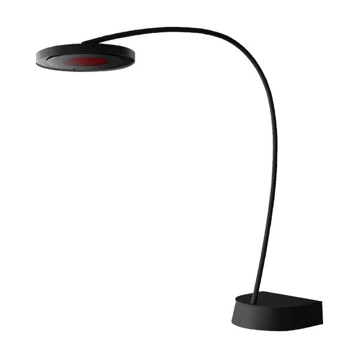
Titles
| Short | Bromic Eclipse Smart-Heat Freestanding Electric Patio Heater | 60 / 60 |
|---|---|---|
| Medium | Bromic Eclipse Smart-Heat Freestanding Electric Patio Heater with LED Light, 2900 W, 121 Sq Ft, Arched Arm, Black | 113 / 120 |
| Long | Bromic Eclipse Smart-Heat Freestanding Electric Outdoor Patio Heater with Dimmable LED Ring, 2900 W, 3 Heat Settings, 121 Sq Ft, 240 V Plug-In, Arched Arm, Weighted Base with Wheels, Black | 188 / 200 |
Feature Bullets
- Heat And Light Over Open Seating – an arched arm carries Eclipse's radiant heat and LED ring over a sofa or table where there is no ceiling or wall to mount to. 160
- Three Settings For Every Evening – two elements give 33%, 66% and 100% of 2,900 W, warming up to 121 sq ft. 107
- Made For Life Outdoors – a weighted base holds the heater in winds up to 20 mph, and two wheels let you move it to wherever tonight's seating is. 145
- Controls In The Box – the Eclipse Dimmer Controller and its remote are included, so the warmth is set from your seat. 117
- Plugs In – a 15 ft cable runs to a 220–240 V IP54 outdoor outlet; keep 79 in of clearance above the floor. 106
Description 183 words
Eclipse Smart-Heat® Freestanding brings the Eclipse disc to the places a ceiling cannot reach: the lounge by the pool, the sofa on the lawn, the table on an open rooftop. A sweeping arched arm on a weighted base holds the matte black head over your seating, with radiant warmth and a dimmable LED ring together, so the evening stays warm and softly lit.
Two elements give three heat settings – 33%, 66% and 100% of 2,900 W – over up to 121 sq ft. The weighted base holds the heater in winds up to 20 mph, and two wheels let you move it when the seating moves; above 20 mph, fix the base. Allow at least 79 in of clearance from the floor.
The Eclipse Dimmer Controller and remote are included, so you can set the heat from your seat. The heater runs on 220–240 V through a 15 ft cable and plug, which needs an IP54 outdoor outlet; have the outlet installed by a licensed electrician to local code. Wi-Fi and app features need compatible Affinity Smart-Heat® Controls, sold separately. 3-year warranty.
Specifications
| Brand | Bromic Heating |
|---|---|
| Collection | Eclipse Smart-Heat® Freestanding |
| Heat type | Medium wave infrared, electric |
| Output | 2,900 W; 33%, 66%, 100% |
| Heat area | Up to 121 sq ft |
| Supply | 220–240 V, 15 ft cable and plug to an IP54 outdoor outlet |
| Current draw | 11.4 A (220 V), 11.8 A (230 V), 12.1 A (240 V) |
| Light | Dimmable LED ring |
| Finish | Matte black |
| Base | Weighted, with two wheels |
| Wind | Base holds in winds up to 20 mph |
| Minimum clearance | 79 in from the floor |
| Certification | SGS/NA SGSNA/21/GZ/00074 |
| Warranty | 3 years |
Variants
| Name | SKU |
|---|---|
| 220–240 V | To confirm |
In The Box
- Eclipse Smart-Heat® Freestanding heater (head, arched arm, weighted base)
- Eclipse Dimmer Controller
- Remote
Required, Sold Separately
- 220–240 V IP54 outdoor outlet – installation by a licensed electrician to local code
- Wi-Fi and app features need compatible Affinity Smart-Heat® Controls, sold separately
Optional Accessories
- –
Search Terms
freestanding patio heater electric; arc patio heater; patio heater with light; pool deck heater; electric heater no gas; rooftop heater; lounge heater; outdoor floor heater; 240 V patio heater
Image Plan
 LifestyleEclipse Freestanding on a lakeside deck (Lookbook 2026)
LifestyleEclipse Freestanding on a lakeside deck (Lookbook 2026)l-016-134 DetailDisc with LED ring lit, close
DetailDisc with LED ring lit, closew-bromic-eclipse-portable-hotel-skansen-04 PlacementArching over courtyard tables; show 79 in clearance
PlacementArching over courtyard tables; show 79 in clearanced-eclipse-freestanding-courtyardEnhanced Content
Plus the shared modules: comparison of series and which heater for your space.
Open items for this listing (6)
- [[VERIFY: SKU list – Product team]]
- [[VERIFY: weight (bromic.com lists 383 lb; framework gives head 30, arm 33, base 320 lb) – Product team]]
- [[VERIFY: LED output (216.6 lm vs 497 lm on Eclipse Electric) – Product team]]
- [[VERIFY: app control for Eclipse Freestanding (dealer evidence only) – Product team]]
- [[VERIFY: US listing mark and whether a 120 V or 208 V model exists for the US – Product team]]
- [[VERIFY: a clean white-ground original (main image here is cut from a grey-ground product shot) – Marketing]]
Sources: data/product-facts.json: eclipse-freestanding; data/retail/retail.json: eclipse, controls; data/product-marketing/eclipse.json: tiers (freestanding), pillars, spec_verify; data/portfolio.json: eclipse-freestanding
Platinum Smart-Heat® Gas
Current (confirm, see verify) · Model-level SKUs
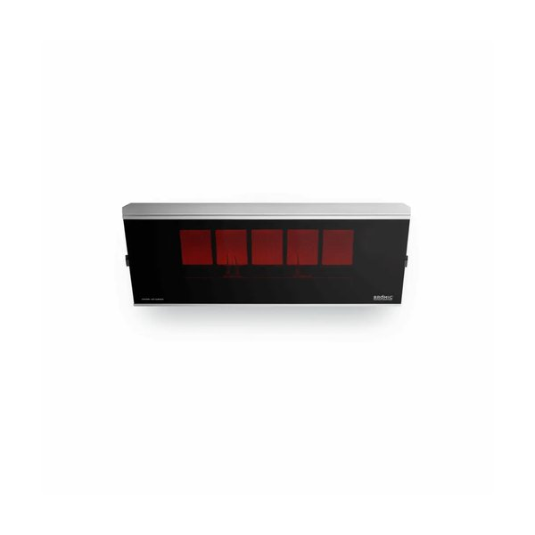
Titles
| Short | Bromic Platinum Smart-Heat Gas Patio Heater, Wall or Ceiling | 60 / 60 |
|---|---|---|
| Medium | Bromic Platinum Smart-Heat Gas Mounted Patio Heater, 23,600 or 39,800 BTU, Natural Gas or Propane, Black or Stainless | 117 / 120 |
| Long | Bromic Platinum Smart-Heat Gas Outdoor Mounted Patio Heater, Ceramic-Glass Screen, 23,600 or 39,800 BTU, 160 or 215 Sq Ft, Natural Gas or Propane, Black or Stainless, Wall or Ceiling Mount | 188 / 200 |
Feature Bullets
- Up To 39,800 BTU Of Radiant Warmth – two sizes, 23,600 and 39,800 BTU, warm heat areas of up to 160 and 215 sq ft from a ceramic-tile burner. 141
- Designed To Be Seen – a signature ceramic-glass screen in a black or stainless body makes the heater part of the design, from a rooftop bar to a courtyard. 155
- Natural Gas Or Propane, The Same Warmth – factory-built natural gas and propane models carry the same rated input, so the fuel follows the site. 144
- Engineered For Peace Of Mind – electronic spark ignition watches the flame and locks out if it fails, on an ETL and cETL listed heater mounted at least 8 ft up. 160
- One Switch For The Whole Terrace – the Affinity Smart-Heat® On/Off Controller, sold separately, switches up to 10 gas heaters a channel by zone. 144
Description 236 words
Platinum Smart-Heat® Gas brings radiant gas warmth to covered terraces, pergolas and courtyards where the heater is part of the design. A signature ceramic-glass screen, with a reflector behind it, sits over a ceramic-tile burner in a black or stainless body, so a hotel rooftop or a timber-lined courtyard stays warm long after the sun goes down.
Choose 23,600 BTU for heat areas of up to 160 sq ft, or 39,800 BTU for up to 215 sq ft, on natural gas or propane: both models carry the same rated input on either fuel. Electronic spark ignition with flame monitoring locks out if the flame fails. Mount it on the wall with the bracket in the box, or two heaters back to back on a ceiling pole with gas and power run inside, angled at 0°, 10° or 20° to the seating, at least 8 ft above the floor. A heat deflector is available where the space above is tight.
Platinum Gas is paired with Affinity Smart-Heat® Controls: the On/Off Controller switches up to 10 gas heaters a channel, and a manual wall switch completes the circuit; the expansion board links the terrace to a building management system. Wi-Fi and app features need compatible Affinity Smart-Heat® Controls, sold separately. The heater needs a 110 V outlet for ignition. Installation by a licensed gas fitter and a licensed electrician to local code. 2-year warranty, excluding hoses and igniters.
Specifications
| Brand | Bromic Heating |
|---|---|
| Collection | Platinum Smart-Heat® Gas |
| Heat type | Radiant gas, ceramic-tile burner behind a ceramic-glass screen |
| Input | 23,600 or 39,800 BTU |
| Heat area | 160 or 215 sq ft |
| Fuel | Natural gas or propane (factory-built models) |
| Electrical | 110 V, under 2 A; 36 in cord with grounded three-prong plug |
| Ignition | Electronic spark ignition with flame monitoring and safety lockout |
| Finish | Black or stainless |
| Length | 22.1 in (23,600 BTU) or 29.8 in (39,800 BTU) |
| Weight | 33 or 44 lb |
| Minimum mounting height | 96 in |
| Tilt | 0°, 10° or 20° |
| Wind | Designed to function in winds up to 10 mph |
| Water rating | IPX4 |
| Certification | ETL / cETL 4009079 |
| Warranty | 2 years, excluding hoses and igniters |
Variants
| Name | SKU | Coverage | Weight |
|---|---|---|---|
| 23,600 BTU, natural gas | BH0110001-1 | 160 sq ft | 33 lb |
| 23,600 BTU, propane | BH0110002-1 | 160 sq ft | 33 lb |
| 39,800 BTU, natural gas | BH0110003-1 | 215 sq ft | 44 lb |
| 39,800 BTU, propane | BH0110004-1 | 215 sq ft | 44 lb |
In The Box
- Platinum Smart-Heat® Gas heater
- Wall bracket
- Factory-fitted manual isolating valve
- CSA-approved flexible gas connector
Required, Sold Separately
- Affinity Smart-Heat® On/Off Controller (up to 10 gas heaters a channel) – required to switch the heater
- Manual wall switch
- 110 V outlet for ignition and controls
- Wi-Fi and app features need compatible Affinity Smart-Heat® Controls, sold separately
- Installation by a licensed gas fitter to local code
- Installation by a licensed electrician to local code
Optional Accessories
- Ceiling mounting pole (two heaters back to back)
- Heat deflector
- Affinity expansion board for building management systems
Search Terms
gas patio heater wall mount; natural gas patio heater; propane wall heater outdoor; infrared gas heater; restaurant terrace heater; stainless patio heater; ceiling mount gas heater; covered patio gas heater
Image Plan
 LifestyleTwo gas heaters angled from a timber eave over a courtyard dining table
LifestyleTwo gas heaters angled from a timber eave over a courtyard dining tablew-bromic-pg-residential-hr DetailStainless Platinum Gas on its bracket under a timber pergola
DetailStainless Platinum Gas on its bracket under a timber pergolaw-bromic-centrico-photos-19 ControlsAffinity On/Off Controller with the app; caption: sold separately
ControlsAffinity On/Off Controller with the app; caption: sold separatelyw-affinity-onoff MountingHeater with the heat deflector and ceiling pole
MountingHeater with the heat deflector and ceiling polew-platinumgas500-2Enhanced Content
Plus the shared modules: comparison of series and which heater for your space.
Open items for this listing (5)
- [[VERIFY: Platinum Gas is not in the Lookbook 2026; confirm it is current in every region – Product team]]
- [[VERIFY: SKUs against the 2026 cut sheets; finish (black or stainless) is not in the published SKUs – Product team]]
- [[VERIFY: one wind figure – 10 mph (manual), 12 mph (cut sheet), 20 km/h (page) – Product team]]
- [[VERIFY: whether the Affinity On/Off Controller gives gas heaters app, schedules and voice – Product team]]
- [[VERIFY: stainless grade of the body; commercial warranty term – Product team]]
Sources: data/product-facts.json: platinum-gas (site.models), principles.codes-gas; data/retail/retail.json: gas, ordering, controls; data/product-marketing/platinum-gas.json: tiers, upgrades, pillars, wind_note, warranty_note, launch.status_note; data/portfolio.json: platinum-gas
Tungsten Smart-Heat® Gas (mounted)
Current · Model-level SKUs
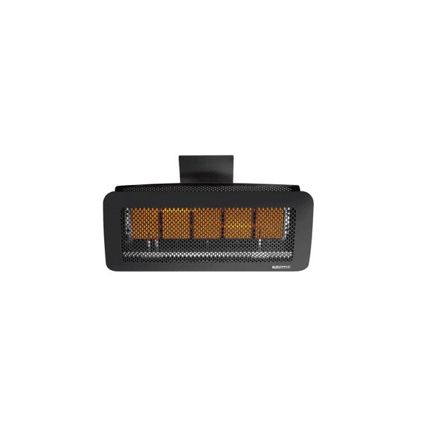
Titles
| Short | Bromic Tungsten Smart-Heat Gas Patio Heater, Wall or Ceiling | 60 / 60 |
|---|---|---|
| Medium | Bromic Tungsten Smart-Heat Gas Patio Heater, Up to 215 Sq Ft, Natural Gas or Propane, Matte Black, Wall or Ceiling | 114 / 120 |
| Long | Bromic Tungsten Smart-Heat Gas Outdoor Mounted Patio Heater, Compact Honeycomb Face, 160 or 215 Sq Ft, Natural Gas or Propane, Matte Black, Wall or Ceiling Mount with Pivot Arm, for Covered Patios | 196 / 200 |
Feature Bullets
- Compact Heat For Covered Spaces – on the wall, under the beam or on a drop pole, a compact honeycomb face warms up to 160 or 215 sq ft and stays out of the way. 160
- Natural Gas Or Propane – run it from the line you already have, or from propane where there is none, with one model for each gas. 129
- Aimed At The Table – the pivot arm turns ±25°, and ceiling poles from 9.69 to 41.18 in set the heater at its 8 ft sweet spot under taller roofs. 144
- Fits The Room You Have – a heat deflector, sold separately, brings the clearance above the heater down from 3 ft to 14 in. 122
- Safety Built In – flame-monitored electronic ignition on an Intertek listed heater, switched on and off with Affinity Smart-Heat® Controls, sold separately. 156
Description 219 words
Tungsten Smart-Heat® Gas is Bromic's compact mounted gas heater for covered patios, bars and outdoor kitchens with a gas line. A matte black body with a honeycomb mesh face over ceramic burners sits neatly on a wall, under a beam or on a drop pole, and warms the seating below without taking over the room.
Choose the smaller model for heat areas of up to 160 sq ft, or the larger for up to 215 sq ft, each built for natural gas or for propane. The pivot arm turns ±25° to aim the warmth at the table, and ceiling poles in six lengths, from 9.69 to 41.18 in, set the heater at its 8 ft sweet spot under taller roofs. Where the space above is tight, a heat deflector brings the clearance from 3 ft down to 14 in. Mount it at least 8 ft above the floor. Flame-monitored electronic ignition looks after every start.
Tungsten Gas is paired with Affinity Smart-Heat® Controls: the On/Off Controller and a manual wall switch turn the heaters on and off by zone. Wi-Fi and app features need compatible Affinity Smart-Heat® Controls, sold separately. The heater also needs 110 V for ignition and controls. Installation by a licensed gas fitter and a licensed electrician to local code. 2-year warranty, excluding hoses and igniters.
Specifications
| Brand | Bromic Heating |
|---|---|
| Collection | Tungsten Smart-Heat® Gas |
| Heat type | Radiant gas, ceramic burners behind a honeycomb mesh face |
| Heat area | Up to 160 or 215 sq ft, by model |
| Fuel | Natural gas or propane (one model for each gas) |
| Electrical | 110 V, under 2 A |
| Ignition | Flame-monitored electronic ignition |
| Finish | Matte black |
| Width | About 19.3 in or 25.4 in, by model |
| Weight | 33 or 44 lb |
| Minimum mounting height | 96 in; optimum about 8 ft |
| Aim | Pivot arm ±25° |
| Certification | Intertek ETL listing 4009079 |
| Warranty | 2 years, excluding hoses and igniters |
Variants
| Name | SKU | Weight |
|---|---|---|
| 160 sq ft model, natural gas | BH0210001-1 | 33 lb |
| 160 sq ft model, propane | BH0210002-1 | 33 lb |
| 215 sq ft model, natural gas | BH0210003-1 | 44 lb |
| 215 sq ft model, propane | BH0210004-1 | 44 lb |
In The Box
- Tungsten Smart-Heat® Gas heater with pivot arm
Required, Sold Separately
- Affinity Smart-Heat® On/Off Controller – required to switch the heater
- Manual wall switch
- 110 V supply for ignition and controls
- Wi-Fi and app features need compatible Affinity Smart-Heat® Controls, sold separately
- Installation by a licensed gas fitter to local code
- Installation by a licensed electrician to local code
Optional Accessories
- Ceiling poles, 9.69 to 41.18 in (six lengths)
- Heat deflector
- Affinity expansion board for building management systems
Search Terms
mounted gas patio heater; natural gas patio heater wall; propane ceiling heater outdoor; black gas patio heater; commercial patio heater gas; bar patio heater; outdoor kitchen heater; covered patio heater gas
Image Plan
 LifestyleCovered restaurant patio bar with Tungsten Gas on timber beams
LifestyleCovered restaurant patio bar with Tungsten Gas on timber beamsw-tungsten-gas-fayetteville-ny-restaurant DetailGlowing honeycomb face, close
DetailGlowing honeycomb face, closew-tungsten-gas-500-fiddler-sydney-1-1ControlsAffinity On/Off Controller with the app; caption: sold separatelyw-affinity-onoff MountingHeat deflector (sold separately): 3 ft to 14 in clearance
MountingHeat deflector (sold separately): 3 ft to 14 in clearancew-tungsten-deflector-1Enhanced Content
Plus the shared modules: comparison of series and which heater for your space.
Open items for this listing (5)
- [[VERIFY: built-in BTU by model – bromic.com 26,000 / 43,000 vs Planning Guide 39,800; no BTU in copy until confirmed – Product team]]
- [[VERIFY: SKUs against the 2026 cut sheets – Product team]]
- [[VERIFY: Affinity On/Off compatibility and capacity with Tungsten Gas – Product team]]
- [[VERIFY: whether the wall bracket ships in the box – Product team]]
- [[VERIFY: wind rating – Product team]]
Sources: data/product-facts.json: tungsten-gas-builtin (site.models), principles.codes-gas; data/retail/retail.json: gas, ordering; data/product-marketing/tungsten-gas.json: tiers (mounted), upgrades, pillars, spec_verify
Tungsten Smart-Heat® Freestanding Gas
Current · Series level – SKUs to confirm
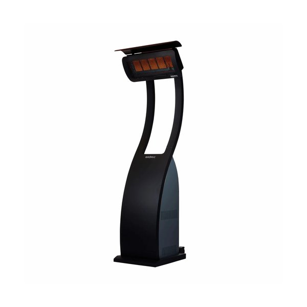
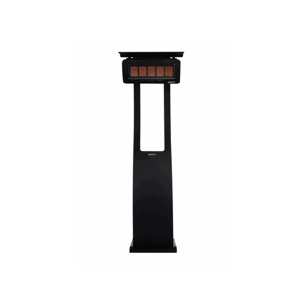
Titles
| Short | Bromic Tungsten Smart-Heat Freestanding Gas Patio Heater | 56 / 60 |
|---|---|---|
| Medium | Bromic Tungsten Smart-Heat Freestanding Gas Patio Heater, 38,000 BTU, 215 Sq Ft, Propane or Natural Gas, Black | 110 / 120 |
| Long | Bromic Tungsten Smart-Heat Freestanding Gas Outdoor Patio Heater, 38,000 BTU, About 215 Sq Ft, Propane or Natural Gas, Tilting Head, Built-In Wheels, 304 Stainless Column, Matte Black | 183 / 200 |
Feature Bullets
- Warmth That Goes Where The Table Goes – built-in wheels roll the tower to wherever tonight's seating is, and the tilting head aims radiant warmth at your guests. 161
- Up To About 215 Sq Ft – 38,000 BTU from a ceramic burner head, for open terraces, sidewalks and pool decks with no wall or roof to mount to. 140
- Propane Or Natural Gas – a 20 lb propane cylinder sits hidden in the base, or the natural gas model connects with a 10 ft quick-connect line. 141
- Safety Built In – a flame failure device and an anti-tilt switch, on a curved 304 stainless steel column finished in matte black. 129
- Set At Its Own Knob – the propane model adjusts from high to low at the heater; there is no wiring and no controller to buy. 124
Description 186 words
Tungsten Smart-Heat® Freestanding Gas is warmth that goes where the table goes. A curved 304 stainless steel column in matte black carries a ceramic burner head on a tilting mount, so you can roll the tower to tonight's seating on its built-in wheels and aim the warmth straight at your guests.
At 38,000 BTU it warms an area of about 215 sq ft, for open terraces, sidewalks, pool decks and lawns with no wall or roof to mount to. Choose propane, with a 20 lb cylinder housed out of sight in the base, or natural gas, which connects to a fixed supply with the 10 ft quick-connect line included. The propane model adjusts from high to low at its own knob; the natural gas model runs on high.
A flame failure device and an anti-tilt switch are built in. The tower is set at the heater and is not on the Bromic app; for app-controlled heat across a terrace, pair mounted Bromic heaters with Affinity Smart-Heat® Controls, sold separately. Natural gas connections by a licensed gas fitter to local code. 1-year warranty on the propane model.
Specifications
| Brand | Bromic Heating |
|---|---|
| Collection | Tungsten Smart-Heat® Freestanding |
| Heat type | Radiant gas, ceramic burner head |
| Output | 38,000 BTU |
| Heat area | About 215 sq ft |
| Fuel | Propane (20 lb cylinder housed in the base) or natural gas (10 ft quick-connect line) |
| Control | Knob at the heater; propane adjusts high to low, natural gas runs on high |
| Column | Curved 304 stainless steel, matte black |
| Head | Tilting |
| Mobility | Built-in wheels |
| Safety | Flame failure device; anti-tilt switch |
| Weight | 124 lb |
| Certification | Intertek 4009079 (propane model) |
| Warranty | 1 year (propane model) |
Variants
| Name | SKU |
|---|---|
| Propane (20 lb cylinder in the base) | To confirm |
| Natural gas (10 ft quick-connect line) | To confirm |
In The Box
- Tungsten Smart-Heat® Freestanding heater
- 10 ft quick-connect gas line (natural gas model)
Required, Sold Separately
- 20 lb propane cylinder (propane model)
- Natural gas connection (natural gas model) – installation by a licensed gas fitter to local code
- Controls: set at the heater's own knob; not on the Bromic app
Optional Accessories
- Tungsten Freestanding cover
Search Terms
freestanding gas patio heater; propane patio heater tower; rolling patio heater; natural gas freestanding heater; restaurant sidewalk heater; pool deck heater gas; commercial outdoor heater; stainless patio heater tower
Image Plan
 LifestyleTungsten Freestanding beside a set dining table (Lookbook 2026)
LifestyleTungsten Freestanding beside a set dining table (Lookbook 2026)l-019-164 DetailGlowing ceramic burner head, close
DetailGlowing ceramic burner head, closew-sydney-residential-tungsten-portable PlacementRow of towers along sidewalk tables
PlacementRow of towers along sidewalk tablesw-starbuck-reserve-nyc-greenwichEnhanced Content
Plus the shared modules: comparison of series and which heater for your space.
Open items for this listing (6)
- [[VERIFY: output 38,000 BTU (Lookbook 2026) vs 38,500 BTU (bromic.com, cut sheet, US manual) – Product team]]
- [[VERIFY: SKU list for propane and natural gas models – Product team]]
- [[VERIFY: natural gas model warranty and certification (bromic.com shows them in the propane column only) – Product team]]
- [[VERIFY: whether the 20 lb propane cylinder is included – Product team]]
- [[VERIFY: wind rating (8 mph on bromic.com; spec_verify open) – Product team]]
- [[VERIFY: the cover accessory and its SKU – Product team]]
Sources: data/product-facts.json: tungsten-freestanding-gas; data/retail/retail.json: gas, controls; data/product-marketing/tungsten-gas.json: tiers (freestanding), pillars; data/portfolio.json
Affinity Smart-Heat® Controls
Current · Series level – SKUs to confirm
see open items
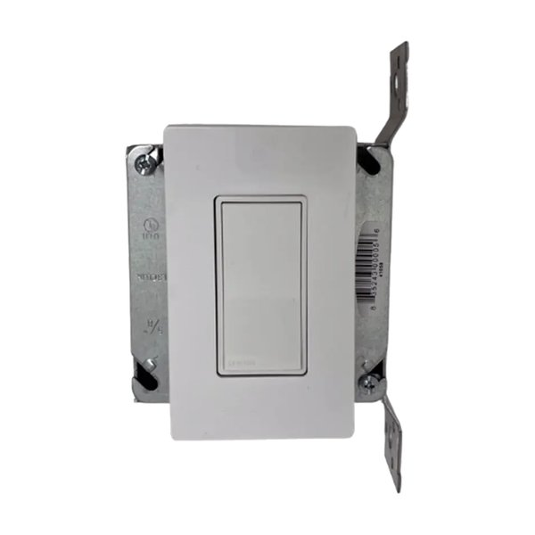
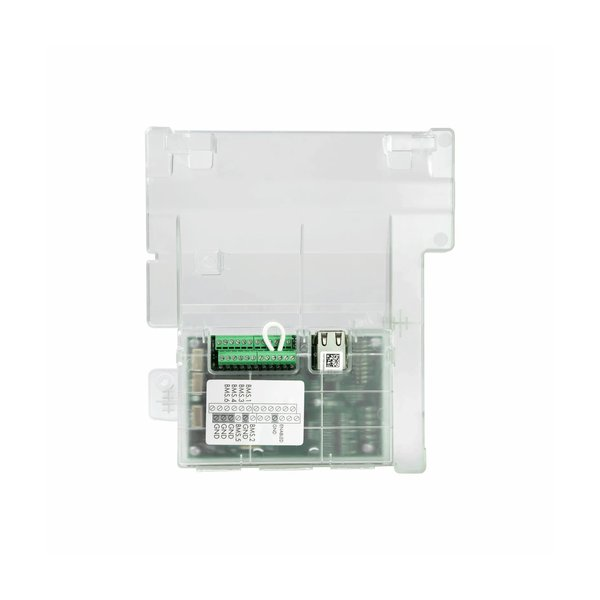
Titles
| Short | Bromic Affinity Smart-Heat Controller for Patio Heaters | 55 / 60 |
|---|---|---|
| Medium | Bromic Affinity Smart-Heat Wi-Fi Controller for Bromic Patio Heaters, Dimmer or On/Off, 1, 2 or 5 Channels, App Control | 119 / 120 |
| Long | Bromic Affinity Smart-Heat Wi-Fi Controller for Bromic Outdoor Heaters, Dimmer, On/Off or Eclipse, 1, 2 or 5 Channels, Bromic App Zones, Schedules and Timers, Works with Alexa and Google Assistant | 196 / 200 |
Feature Bullets
- The Warmth Exactly Where You Want It – every Bromic heater is paired with Affinity Smart-Heat® Controls, so you set zones, schedules and timers in the Bromic app. 162
- Dimmed In 1% Steps – the Dimmer Controller sets Platinum and Tungsten Electric heaters to the evening, up to 6 kW a channel at 208–277 V. 137
- One Switch For Many Heaters – the On/Off Controller handles up to 6 kW a channel at 208–277 V, or up to 10 gas heaters a channel. 129
- Heat And Light For Eclipse – the Eclipse Controller runs one Eclipse heater a channel, with heat and the LED ring in the app. 125
- Fits Your Smart Home – Alexa and Google Assistant, and Control4, Crestron or Lutron where compatible; the expansion board adds Ethernet and 0–10 V for building systems. 168
Description 217 words
Every Bromic heater is paired with Affinity Smart-Heat® Controls, so the warmth is always exactly where, and when, you want it. Choose the controller that suits the heater: the Dimmer Controller sets Platinum and Tungsten Electric heaters in 1% steps; the On/Off Controller switches electric heaters or up to 10 gas heaters a channel; and the Eclipse Controller brings Eclipse heat and light together, one heater a channel. Each comes in 1, 2 or 5 channels (Eclipse: 1 or 5), at up to 6 kW a channel on 208–277 V for electric heaters.
On 2.4 GHz Wi-Fi, the Bromic app groups heaters into zones and runs schedules and timers, with Bluetooth at about 30 ft and optional Ethernet. Ask Alexa or Google Assistant, or link Control4, Crestron or Lutron; compatibility varies by system and may need additional integration hardware or configuration. The expansion board adds Ethernet and 0–10 V for building management and home automation, and is built into the 5-channel units; in BMS mode the app is turned off.
A manual wall switch, rated 20 A at 120–277 V, single or dual, completes every circuit. The On/Off Controller is rated IP54 for -4 to 86°F. Controllers are certified to UL 60730-1 and CAN/CSA E60730-1, with a 1-year warranty. Installation by a licensed electrician to local code.
Specifications
| Brand | Bromic Heating |
|---|---|
| Collection | Affinity Smart-Heat® Controls |
| Controllers | On/Off; Dimmer; Eclipse; manual wall switch; expansion board |
| Channels | On/Off and Dimmer: 1, 2 or 5; Eclipse: 1 or 5 |
| Capacity a channel | On/Off and Dimmer: 6 kW at 208–277 V; On/Off: up to 10 gas heaters; Eclipse: one Eclipse heater |
| Dimming | 1% steps (Dimmer) |
| Compatible heaters | Dimmer: Platinum Electric, Tungsten Electric; Eclipse Controller: Eclipse Electric |
| Connectivity | 2.4 GHz Wi-Fi; Bluetooth about 30 ft; optional Ethernet |
| App | Bromic app: zones, schedules, timers |
| Integrations | Amazon Alexa, Google Assistant, Control4, Crestron, Lutron (compatibility varies) |
| Wall switch | 20 A, 120–277 V; single or dual; indoor or outdoor kit |
| Expansion board | Ethernet and 0–10 V for BMS; built into 5-channel units |
| On/Off enclosure | IP54; -4 to 86°F operating |
| Certification | UL 60730-1, CAN/CSA E60730-1 |
| Warranty | 1 year |
Variants
| Name | SKU |
|---|---|
| On/Off Controller, 1, 2 or 5 channels | To confirm |
| Dimmer Controller, 1, 2 or 5 channels | To confirm |
| Eclipse Controller, 1 or 5 channels | To confirm |
| Manual wall switch, single or dual, indoor or outdoor kit | To confirm |
| Expansion board | To confirm |
In The Box
- Affinity Smart-Heat® controller (as ordered)
Required, Sold Separately
- One or more Bromic heaters
- Manual wall switch (each circuit)
- 2.4 GHz Wi-Fi network for app features
- Additional integration hardware or configuration for some smart-home systems
- Installation by a licensed electrician to local code
Optional Accessories
- Expansion board (2-channel and 1-channel units)
Search Terms
patio heater controller; outdoor heater dimmer; wifi heater controller; smart patio heater control; heater app control; alexa patio heater; outdoor heater timer; infrared heater dimmer switch
Image Plan
w-affinity-dimmer-1ch-2LifestyleThe Bromic app on a phone beside a covered terrace with recessed heatersw-render-1 DetailAffinity Dimmer box mounted on siding with conduits
DetailAffinity Dimmer box mounted on siding with conduitsw-render-3 Range5-channel Dimmer
Range5-channel Dimmerw-affinity-dimmer-5ch IntegrationExpansion board for building systems
IntegrationExpansion board for building systemsw-expansion-boardEnhanced Content
Plus the shared modules: comparison of series and which heater for your space.
Open items for this listing (6)
- [[VERIFY: controller SKU list by type and channel count – Product team]]
- [[VERIFY: controller capacities, gas compatibility and timer behaviour – Product team]]
- [[VERIFY: Dimmer compatibility with Tungsten Electric Series II – Product team]]
- [[VERIFY: what ships in each controller box – Product team]]
- [[VERIFY: app name (named three ways across controller pages) – Product team]]
- [[VERIFY: a controller-only white-ground image with no hand or phone – Marketing]]
Sources: data/product-facts.json: affinity-controls; data/retail/retail.json: controls
Enhanced Content Modules
Rendered samples at A+ sizes (970 × 600 and 1464 × 600 px) in the Bromic look.
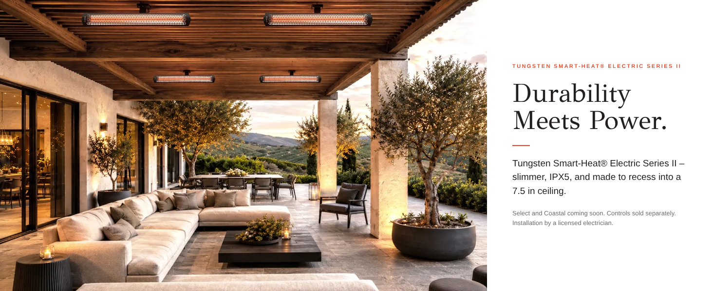
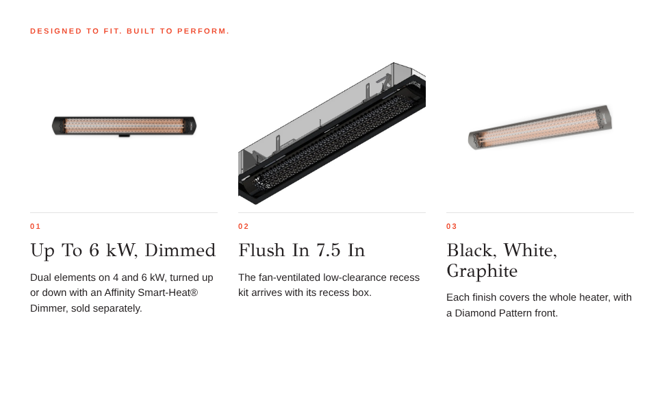
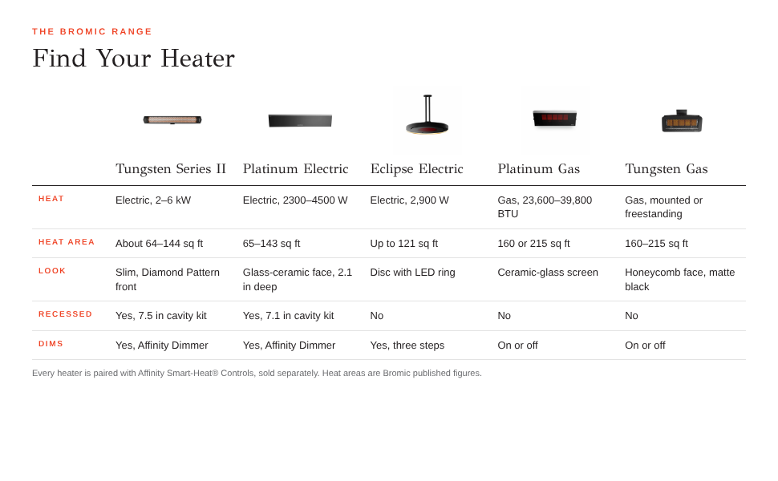
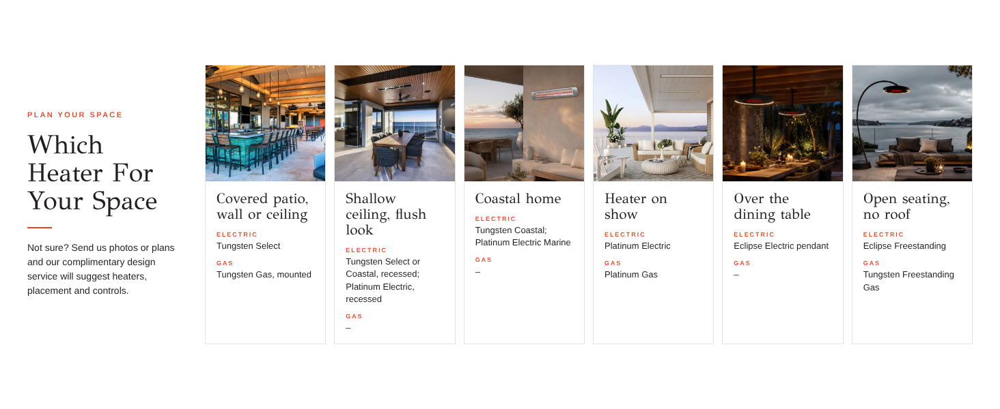
Retailer Requirements We Followed
- Main image on pure white RGB 255, 255, 255, product about 85% of the frame, no added text, at least 1,000 px on the long side, 2,000 px for zoom – seller guides summarising Amazon policy (junglescout.com/resources/articles/amazon-image-requirements; sellerlabs.com/blog/amazon-product-image-requirements-2026) and Amazon's clothing image guideline (sellercentral.amazon.com/gp/help/external/G200498950). Walmart also asks for square images on a seamless white ground (marketplacelearn.walmart.com, product detail page image guidelines).
- Titles at most 200 characters including spaces, brand first, no promotional claims or restricted characters (sellercentral.amazon.com/gp/help/external/GYTR6SYGFA5E3EQC). Some categories cap lower; one source reports a 75-character limit from July 2026, unconfirmed on Amazon's pages – use the medium or short title where a cap applies.
- Bullets: up to 500 characters for sellers, 255 for vendors, with 150–250 recommended; Rona caps bullets at 200 (amalytix.com/en/knowledge/seo/amazon-bullet-points; vendors.rona.ca online product content guideline). Ours stay under 250 – trim to 200 for Rona.
- A+ modules: 970 × 600 standard header, 1464 × 600 Premium A+ (junglescout.com/resources/articles/amazon-a-plus-content; Syndigo Amazon A+ guide).
- Home Depot and Lowe's publish their item-setup rules only inside their supplier portals; confirm limits there before submission.